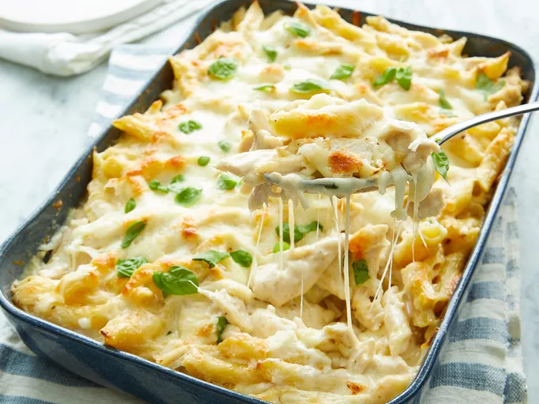

Chicken Alfredo
Home

Creamy Chicken Alfredo
This Chicken Alfredo recipe is a rich and creamy Italian classic featuring tender chicken, a velvety homemade Alfredo sauce, and perfectly cooked fettuccine. It's a simple yet indulgent dish that pairs beautifully with a fresh garden salad and warm garlic bread.
Ingredients
- Chicken breast
- Fettuccine pasta
- Butter
- Heavy cream
- Garlic
- Parmesan cheese
- Salt
- Pepper
- Parsley
Steps
- Cook the chicken: Season the chicken breasts with salt and pepper. Sauté in a skillet over medium heat until golden brown and cooked through. Remove from the pan and slice.
- Boil the pasta: Cook the fettuccine in a pot of boiling salted water until al dente. Drain and set aside.
- Prepare the Alfredo sauce: In the same skillet, melt butter over low heat. Add minced garlic and sauté until fragrant. Stir in heavy cream and bring to a gentle simmer.
- Add cheese and seasonings: Gradually whisk in Parmesan cheese, stirring constantly until the sauce is smooth. Season with salt and pepper to taste.
- Combine everything: Add the cooked fettuccine and sliced chicken to the sauce, tossing gently to coat everything evenly.
- Serve: Garnish with freshly chopped parsley and extra Parmesan cheese. Serve warm and enjoy!